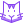
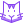

Lobo Cinza
da família canis lupusÉ um sobrevivente da Era do Gelo, originário do Pleistoceno Superior, cerca de 300 mil anos atrás.[2] O sequenciamento de DNA e estudos genéticos reafirmam que o lobo cinzento é ancestral do cão doméstico

O peso e tamanho dos lobos variam muito em todo o mundo, tendendo a aumentar proporcionalmente com a latitude, como previsto pela teoria de Christian Bergmann. Em geral, a altura, medida a partir dos ombros, varia de 60 a 95 centímetros.

O peso varia geograficamente. Em média, os lobos europeus pesam 38,5 kg; os lobos da América do Norte, 36 kg; os lobos indianos e árabes, 25 kg.[7] Embora raros, lobos com mais de 77 kg foram encontrados no Alasca, Canadá,[8] e na antiga União Soviética.
“Há algo no uivar do lobo que tira um homem do aqui e agora e o transporta para uma floresta da mente.”
- Surgiu: 12.000 anos
- Tipo: Mamífero
- Idade Média: 13 anos
- Macho adulto: 80kg
- Fêmea adulta: 55kg
- Família: Lupus
É um sobrevivente da Era do Gelo, originário do Pleistoceno Superior, cerca de 300 mil anos atrás.[2] O sequenciamento de DNA e estudos genéticos reafirmam que o lobo cinzento é ancestral do cão doméstico.
É um sobrevivente da Era do Gelo, originário do Pleistoceno Superior, cerca de 300 mil anos atrás.[2] O sequenciamento de DNA e estudos genéticos reafirmam que o lobo cinzento é ancestral do cão doméstico.